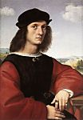
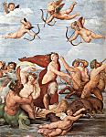

Raffaello
Cliquez sur les images pour les agrandir
1 
2 
3 
4 
5 
6 
7 
8 
9 
10 
11 
12 
13 
14 
15 
16 
17 
18 
19 
Raffaello Sanzio, ou Santi, dit Raffaello
(Urbino 1483 - Rome 1520)

Introduction
L'itinéraire de l'artiste en Italie centrale justifie la division traditionnelle de sa brève carrière, dont la peinture a fait la gloire, en trois périodes d'importance croissante : la période des Marches et de l'Ombrie (1500-1504), la période florentine (1504-1508) et la période romaine (après 1508).
Les Marches et l'Ombrie
À Urbino, Raphaël s'initia à l'art auprès de son père Giovanni Santi, mais apprit sans doute davantage au contact du milieu raffiné de la cour ducale. Puis il compléta son apprentissage à Pérouse chez le Pérugin, qui sut lui communiquer un sens de l'ampleur que lui-même tenait de Piero della Francesca. Les ouvrages produits par Raphaël dans cette période – de 1500 environ à 1504 – reflètent le style du Pérugin, parfois aussi celui du Pinturicchio (1454-1513), non sans laisser deviner un accent plus humain et un goût de la simplicité que ne contredit pas le raffinement de l'exécution. Le retable de l'église de San Francesco al Monte de Pérouse (1502-1503, Pinacothèque vaticane) fait du Couronnement de la Vierge (1) le sujet d'une composition à deux étages, ou la variété des attitudes et des expressions témoigne d'une recherche personnelle. Peint en 1504 pour San Francesco de Città di Castello, le Mariage de la Vierge (2) (pinacothèque Brera, Milan) reprend avec plus de grâce la démonstration de géométrie spatiale que le Pérugin avait réussie dans la Remise des clefs à la chapelle Sixtine.
Florence
En s'installant à Florence en 1504 – il devait y rester quatre ans –, le jeune maître provincial découvrait de nouveaux horizons. Il ne pouvait ignorer ni la tradition du quattrocento ni la présence simultanée de Léonard de Vinci et de Michel-Ange. Les compositions monumentales de Fra Bartolomeo (1472-1517) contribuèrent à élargir le champ de ses expériences. Sa production d'alors se ressent de ces courants divers, mais l'humanité de plus en plus profonde qu'elle respire doit déjà tout à une vision personnelle.
La culture florentine imprègne certains petits tableaux au faire raffiné : Saint Michel, Saint Georges (musée du Louvre) ; Saint Georges (National Gallery, Washington) ; le diptyque formé autrefois par le Songe du chevalier (National Gallery, Londres) et les Trois Grâces (3) (musée Condé, Chantilly). Mais Raphaël, à Florence, se consacra surtout à des variations sur le thème de la Madone, en y mettant un accent inimitable de féminité et de tendresse. Parfois seule avec l'Enfant, la Vierge est souvent accompagnée d'autres personnages, souvent aussi placée dans un paysage de tradition ombrienne, lumineux et serein. Les plus célèbres madones florentines de Raphaël sont celles dites du grand-duc (4) (palais Pitti, Florence) et de la maison d'Orléans (musée Condé), la Vierge à la prairie (5) Kunsthistorisches Museum, Vienne), ou le groupe pyramidant s'inspire de la Sainte Anne de Léonard, comme dans la Madone au chardonneret (6) (galerie des Offices, Florence) ou la Belle Jardinière (Louvre). Le thème est aussi au centre de compositions plus ambitieuses, mais clairement articulées, qui l'amplifient en « conversation sacrée » : le retable « Colonna » (Metropolitan Museum, New York), le retable « Ansidei » (National Gallery, Londres), la Madone au baldaquin (palais Pitti). La Mise au tombeau (7) (galerie Borghèse, Rome) est le sujet principal du retable « Baglioni », peint en 1507 pour San Francesco de Pérouse ; on y trouve par exception un style tendu, avec une recherche plastique inspirée de Michel-Ange. La Gloire de la Trinité, fresque peinte à San Severo de Pérouse, est en revanche d'une ampleur paisible qui annonce le Triomphe de l'eucharistie. À la période florentine appartiennent enfin de beaux portraits ou l'influence de Léonard est manifeste : la Donna gravida (palais Pitti), Agnolo Doni (8) et Maddalena Doni (palais Pitti), sur fond de paysage comme la Dame à la licorne (9) (galerie Borghèse).
Rome : les commandes pontificales
Arrivé à Rome en 1508, Raphaël allait y trouver le terrain favorable à l'épanouissement de son génie. Exalté et mûri par la révélation de l'Antiquité, ainsi que par l'exemple de Bramante et de Michel-Ange, il apparaissait bientôt comme l'artiste le plus capable de traduire en un langage de portée universelle les grands desseins des papes humanistes de la Renaissance ; et d'abord Jules II, qui rêvait de ressusciter la Rome impériale sous la domination spirituelle, temporelle et culturelle de l'Église.
Dans le palais du Vatican, une équipe de peintres siennois et ombriens venait d'entreprendre la décoration de l'appartement situé au-dessus de celui d'Alexandre VI Borgia. Dès 1508, Jules II décida de leur substituer Raphaël, que Bramante avait introduit à la cour pontificale. Ainsi prit naissance, sous le nom de stanze, ou « chambres », du Vatican, le plus célèbre cycle de fresques qui soit dû à l'artiste – et, pour une large part, à son atelier.
La chambre dite « de la Signature » fut peinte de 1509 à 1511, presque entièrement de la main de Raphaël. Cet ensemble, ou son art atteint le point d'équilibre et obéit à une inspiration particulièrement élevée, donne forme à un grand projet de l'humanisme, la réconciliation de la culture païenne et de l'idéal chrétien. Parmi des grotesques déjà exécutés par le Sodoma (1477-1549), les quatre médaillons de la voûte contiennent les figures allégoriques de la Théologie, de la Philosophie, de la Poésie et de la Justice, auxquelles se réfèrent les sujets des caissons voisins : le Péché originel, l'Astronomie, Apollon et Marsyas, le Jugement de Salomon. Le thème quadripartite est développé par les grandes fresques cintrées des parois, ou l'allégorie fait place à des représentations vivantes. Illustrant la Théologie, le Triomphe de l'eucharistie (10) (célèbre sous l'appellation peu exacte de « Dispute du saint sacrement ») superpose magistralement une zone terrestre, celle de l'Église militante (docteurs, papes et fidèles), et une zone céleste, celle de l'Église triomphante (prophètes, apôtres et saints), dans un espace incurvé ou tout converge vers l'ostensoir central. La Philosophie est célébrée par l'École d'Athènes, dont les figures de philosophie et de savants peuplent la perspective majestueuse d'un temple inspiré de Bramante. Pour la Poésie, c'est la composition non moins claire du Parnasse, ou les poètes anciens et modernes accompagnent Apollon et les Muses ; pour la Justice enfin, deux scènes : Grégoire IX promulguant les Décrétales et Tribonien remettant les Pandectes à Justinien, séparées par une fenêtre et surmontées d'une représentation allégorique des Vertus.
Peinte de 1511 à 1514, la chambre dite « d'Héliodore » dénote une évolution par rapport à la précédente. Moins idéal, plus historique, comportant même des allusions à la politique pontificale, le thème des parois – les médaillons de la voûte offrant quatre épisodes de l'Ancien Testament – est celui de l'intervention divine en faveur de l'Église. D'autre part, le registre des moyens picturaux s'est étendu : avec la scène d'Héliodore chassé du Temple (11) (à noter la présence significative de Jules II), c'est le mouvement qui entre en jeu ; avec la Délivrance de saint Pierre, c'est le clair-obscur dans une version nocturne ; avec la Messe de Bolsena, le réalisme, dont témoignent les portraits de dignitaires de la cour pontificale, et la couleur, plus généreusement traitée, sans doute sous l'influence vénitienne ; avec la Rencontre de saint Léon et d'Attila (ou Léon X apparaît sous les traits du saint), une nouvelle formule de composition, par masses inégales.
Déjà sensible dans la chambre d'Héliodore, la part des aides de Raphaël devient importante dans la chambre dite « de l'Incendie du Borgo », peinte pour Léon X de 1514 à 1517, selon un thème ou l'histoire et l'actualité ont une place encore plus grande. Les quatre scènes principales font agir les papes du nom de Léon. Celle qui justifie l'appellation de la chambre, Léon IV arrêtant l'incendie du Borgo par un signe de croix (12), est la plus remarquable avec sa composition en profondeur, la passion archéologique dont elle témoigne, la qualité plastique de ses morceaux dont certains paraissent de la main de Raphaël.
Dans la salle dite « de Constantin », seule la conception de l'ensemble revient au maître ; l'exécution est entièrement due à ses disciples, par exemple Jules Romain, auquel on attribue la fresque tumultueuse et grandiose ou figure la Bataille du pont Milvius (ou Victoire de Constantin sur Maxence).
C'est sans doute en 1514 que Léon X avait commandé à Raphaël un autre ensemble capital : les cartons de dix tapisseries des Actes des Apôtres destinées à la chapelle Sixtine. Tissée à Bruxelles, la tenture originale est exposée à la Pinacothèque vaticane. Sept des cartons subsistent (Victoria and Albert Museum, Londres) : ces grandes compositions, notamment la Pêche miraculeuse, qui semble autographe, valent par la simplicité classique et l'efficacité d'une mise en scène donnant aux personnages le rôle essentiel.
De 1518 à sa mort, Raphaël dirigea enfin le chantier des « loges » du Vatican. C'est une galerie de treize travées dont la décoration délicate et fastueuse, exécutée notamment par Giovanni da Udine (1487-1564), associe des grotesques peints et des stucs modelés, tout en laissant la place à de petites compositions à fresque, au nombre de quatre par travée, qui illustrent d'une manière concise et vivante les principaux épisodes de l'Ancien Testament. Cette « Bible » célèbre est de l'invention du maître, et l'on connaît plusieurs dessins qui s'y rapportent, mais l'exécution revient à Jules Romain, Polidoro da Caravaggio (1500-1546), Perin del Vaga (vers 1501-1547), Giovanfrancesco Penni (1488-vers 1530), etc.
Rome : autres travaux
Les chantiers du Vatican n'absorbaient pas la prodigieuse activité de Raphaël, qui eut à décorer de fresques plusieurs édifices romains. Celle qui représente Isaïe entre deux putti, à l'église Sant'Agostino (1511), rappelle de très près les prophètes de Michel-Ange. Les commandes du banquier Agostino Chigi méritent une attention particulière. Au rez-de-chaussée de sa villa, appelée plus tard « la Farnesina », Raphaël peignit en 1511 le Triomphe de Galatée (13), composition souple et imprégnée d'un humanisme délicat. C'est encore le sentiment plastique de Michel-Ange qui inspire les quatre sibylles, les anges et les putti surmontant un arc de Santa Maria della Pace (1514). À Santa Maria del Popolo, la chapelle Chigi, dont l'architecture est de Raphaël, a des mosaïques exécutées sur ses dessins (1516). Le maître fut enfin chargé, en 1517, de décorer à fresque la loggia de la villa Chigi. À défaut de l'exécution, l'invention, très originale, lui revient, comme en témoignent de beaux dessins. La salle imite une pergola avec des festons de fleurs et de fruits ; la fable de Psyché occupe le milieu de la voûte et ses dix retombées.
La suite des madones romaines continue celle de la période florentine, dans un style plus mûr et souvent plus grave. La madone dite du duc d'Albe (14) (National Gallery, Washington) est en tondo, de même que la célèbre Vierge à la chaise (palais Pitti). La Madone au diadème (Louvre) reste de petit format, alors qu'une ample composition signale la Madone de Foligno (Pinacothèque vaticane), la Madone au Poisson (musée du Prado, Madrid) et la Madone de Saint-Sixte (15) (Gemäldegalerie, Dresde) ; cette dernière, qui provient de San Sisto de Plaisance, est la plus mystique dans son dépouillement. D'autres tableaux religieux datent de la période romaine : la Vision d'Ezéchiel (palais Pitti), d'effet monumental malgré le petit format ; la Sainte Cécile (pinacothèque de Bologne), avec sa nature morte d'instruments de musique ; enfin la célèbre Transfiguration (16) (Pinacothèque vaticane), en deux registres, dont la partie inférieure trahit l'intervention d'élèves.
La tâche écrasante de Raphaël ne l'empêche pas de peindre, à Rome, quelques portraits dont le raffinement égale la simplicité : le Cardinal (Prado, Madrid), Baldassare Castiglione (17) (Louvre), Fedra Inghirami (palais Pitti), la Donna velata (palais Pitti), le présumé Bindo Altoviti (National Gallery, Washington), Léon X avec deux cardinaux (18) (Offices).
L'univers de Raphaël
Ce que révèle avant tout l'œuvre du maître au long de ces trois périodes, et ce qui explique le plus aisément l'étendue de son succès, c'est la prodigieuse faculté qu'il eut de traduire des concepts d'une grande élévation en un langage naturel et accessible à tous, en un monde de formes que traverse un souffle profondément humain. L'exemple des Madones est déjà significatif. L'accent peut être mis sur la maternité heureuse (la Belle Jardinière, la Vierge à la chaise), ou sur la gravité de la mission (Madone de Saint-Sixte) ; ce que l'on a toujours, c'est l'image vivante d'une féminité qui allie subtilement la grâce et la noblesse. Mais les grands cycles romains ont permis à Raphaël de prouver plus complètement son invention. On ne peut, certes, lui faire honneur de la totalité d'un programme tel que celui de la chambre de la Signature, ou l'humanisme prend une résonance néoplatonicienne. La pensée pontificale a eu ici sa part, mais l'interprétation de Raphaël nous fait comprendre tout ce que l'on a voulu dire. La vocation de l'artiste n'était pas de tracer des figures allégoriques – présentes cependant pour fixer le thème –, mais plutôt d'en développer la signification dans des scènes dont chacune raconte une aventure de l'esprit humain. La composition joue évidemment un rôle primordial. Elle exprime par elle-même, par le balancement de ses masses, par l'équilibre final des forces qu'elle met en jeu, par la place qu'elle assigne à chaque chose, mais aussi par la souplesse de ses lignes déterminantes, l'idée d'un ordre spirituel. Elle respire à la mesure d'un espace qu'amplifie la perspective, ou les figures comptent moins par elles-mêmes que par leur disposition. Tout cela est le signe d'un tempérament classique, mais le génie de Raphaël est assez riche pour admettre aussi des tendances apparemment contraires. La chambre d'Héliodore en est la preuve, avec l'intérêt qui s'y manifeste pour le mouvement, pour l'éclairage nocturne, autrement dit pour l'accidentel, et pour cette vérité individuelle qu'expriment avec tant de pénétration les admirables portraits peints à Florence ou à Rome.
La main de Raphaël
Il faut se garder d'une erreur assez répandue qui consiste à croire que le mérite de Raphaël réside dans la conception et peut-être dans la composition, mais guère dans l'exécution, à le ramener, comme voulait Bernard Berenson, à celui d'un génial « illustrateur ». Raphaël est aussi un très grand peinte. Il est vrai qu'une sorte de pudeur l'a presque toujours amené à dissimuler ses moyens et sa science sous une apparence de simplicité, voire d'ingénuité. Il est vrai encore qu'il a eu le rôle d'un maître d'œuvre, que l'ampleur de sa tâche l'a souvent obligé à confier, en partie ou même entièrement, l'exécution des commandes à ses élèves ou collaborateurs, qu'il n'est pas facile enfin de déterminer le degré d'importance exact de ces interventions. On s'accorde cependant à juger autographes un certain nombre d'ouvrages dont la qualité s'impose aux regards. Qualité du dessin, attestée d'ailleurs par les nombreuses études préparatoires que les grandes collections mondiales conservent du maître et qui font goûter toute la sensibilité de contours nés d'un jeu de courbes. Qualité de la couleur, généralement discrète et servante de la forme, parfois plus riche comme le montre la Messe de Bolsena (19). Qualité du faire, léger et vibrant dans les meilleurs cas, mais d'une virtuosité qui ne s'affiche pas volontiers.
Le peintre et sa postérité
Les gravures de Marcantonio Raimondi (1480-1534), contemporain de Raphaël, ont contribué à la popularité de son œuvre. La diffusion du style s'est opérée grâce à ses nombreux aides et disciples, dont Jules Romain apparaît de beaucoup le plus personnel. Il est vrai que l'usage fait par eux du langage de leur maître a le plus souvent débouché sur le maniérisme. Le véritable héritier de Raphaël serait plutôt un peintre français du XVIIe s., Le Sueur.
Longtemps, et non sans abus, l'œuvre de Raphaël a été regardée comme une sorte de manifeste du classicisme. C'est peut-être la raison principale du dédain qu'elle rencontre souvent depuis le milieu du siècle dernier, et qu'exprimait notamment la révolte des préraphaélites. De nos jours encore, les qualités de Raphaël ne sont pas de celles qui peuvent combler un goût plutôt à la recherche de l'inattendu et de l'inachevé. Un regard attentif permet cependant de discerner sous le vêtement de la simplicité ce qui fait la jeunesse et l'élévation de son message.
Raphaël architecte
Les ouvrages d'architecture de Raphaël méritent une place parmi ceux qui contribuent à définir l'esprit de la Renaissance classique. L'essentiel est à Rome. L'église Sant'Eligio degli Orefeci date de 1513 environ. En 1514, Raphaël fut nommé, après Bramante, directeur des travaux de la basilique vaticane ; il adopta un projet qui abandonne la croix grecque pour la croix latine, mais qui ne fut pas exécuté comme tel. En revanche, il s'inspira du projet de Bramante pour Saint-Pierre en élevant vers 1515, à Santa Maria del Popolo, la chapelle Chigi. La loggia de la villa Madama, de 1516 environ, est remarquable par sa voûte à décor de stuc.

© 2006 Umanista.Net